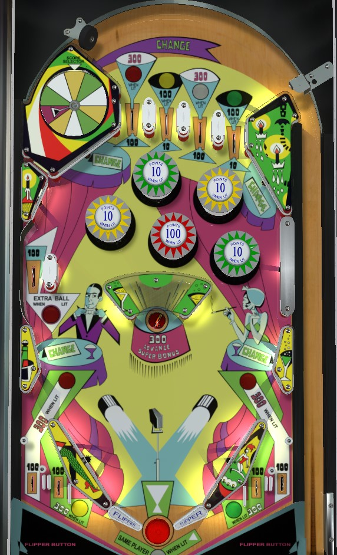

The left wall that forms part of the top lanes funnel, the side wall above and slightly left of the left green pop bumper, the upper side wall above-right of the pop bumpers, and the two side walls about 1/3 of the way up the table rotate the colour wheel in the top left of the game. The wheel can point at green, white, yellow, or red; there are 3 spaces each of green, white, and yellow, and only 1 red.
The center saucer scores 300 points and advances the "Super Bonus" reel on the backglass, which resets for each player. Depending on operator settings, a free game can be awarded if the Super Bonus reaches 4, 5, 6, 7, or 8.
Every 2nd 1-point switch hit anywhere in the game toggles whether or not the center post is raised.
Special can be set to award an extra ball instead of a free game. It cannot be set to be worth points. There is no end of ball bonus. Tilt ends the ball in play only.
The below image of Cabaret's playfield was taken from the VPX recreation by Loserman76 and Kees.
